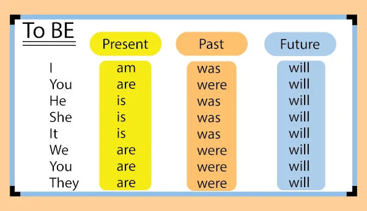

O verbo to be, em inglês, significa “ser” ou “estar” e é o mais importante do idioma.

O verbo to be significa “ser” e “estar”, e é um dos mais importantes do
idioma. Serve como
fundamento para o aprendizado de diversas formas verbais. Serve também para a comunicação
mais básica possível. É um verbo irregular, com diversas formas. Pode funcionar também como
verbo auxiliar.
Seu uso varia com o tempo verbal e se a sentença é negativa ou interrogativa. Admite formas
contraídas/reduzidas e exige sujeito visível.
Toda vez que se usa um verbo em inglês, ele precisa de um sujeito. Para o verbo to be, não
é diferente. Primeiramente, contudo, vamos entender a forma base, também conhecida como
infinitivo. É o verbo em sua forma simples, com o to.
- To be – ser/estar
Para construir os tempos verbais, usamos estas formas, retirando o to.
Indica, na língua inglesa, ações que acontecem com regularidade. Refere-se também a características de seres, no caso do verbo to be. Verbos no simple present normalmente seguem a forma base. Diferentemente de outros verbos no simple present, o verb to be se modifica:
Na forma negativa, temos a forma contraída e a forma extensa. Na forma extensa, adicionamos
not após o verb to be.
Já a forma contraída é assim:
A forma interrogativa vai envolver inversões! Isso é verdade para todos os tempos verbais.
ATENÇÃO: Sem forma abreviada acima.
Vamos, então, prosseguir, com a lógica que vimos de he/she/it is e com we/you/they are.
O present continuous equivale ao que chamamos de gerúndio em português. Sua formação se dá com o verb to be na forma base (am/is/are) seguido do verbo na forma base +ing. Vamos entender melhor?
As abreviações são as mesmas! Confira na seção que vem logo antes.
E a forma interrogativa? Necessita de uma inversão:
A seguir, as formas negativas e negativa interrogativa. As formas contraídas são muito mais
comuns. As formas extensas são mais formais.
O simple past indica uma ação terminada no passado, equivalendo geralmente ao pretérito
perfeito e ao pretérito imperfeito em português.
To be é um verbo irregular. Portanto, temos variações de acordo com as pessoas gramaticais.
Um verbo irregular tem relação com a forma do particípio: essa também foge da regra. Guarde
essa informação, pois vai ser importante nos perfect tenses. Mas fique tranquila (o), pois
vamos te relembrar disso. Seguimos agora com exemplos de sentenças no simple past.
Já a forma contraída negativa é assim:
As perguntas vão envolver inversões:
O past continuous indica ação iniciada no passado que foi, normalmente, interrompida. É o
gerúndio no passado, em português. Sua formação se dá com o verb to be flexionado no passado
(was/were) e o verbo na forma base +ing. É paralela à construção do present continuous.
Vamos ver o exemplo na tabela?
Para perguntas: fazemos uma inversão, colocando o verbo auxiliar to be no início da
sentença.
Para sentenças negativas:
Para sentenças negativas interrogativas:
Mesmo com present no nome, este tempo verbal indica uma ação passada e terminada. Sua
construção se dá com o verbo have flexionado no simple present + participle (verbo no
particípio). A forma abreviada é 've ou 's. Vamos conferir?
Primeiramente, qual o participle do verb to be? Been.
Formas abreviadas:
O verb to be é irregular. Assim, a forma do simple past e do past participle (particípio)
não coincidem. Para entender melhor, é importante comparar com o simple present.
— Verb to be (ser/estar):
Observem que a tradução coincide. Isso que significa que apesar de lermos o have ou o has,
ele não deve ser levado em consideração como um termo a ser traduzido, pois ele apenas
indica que o tempo verbal é passado e que trata-se de uma ação terminada.
Para a forma afirmativa, é isso. Para a negativa, podemos ter:
Lembrete: Have é utilizado com: I/we/you/they. Has é utilizado com he/she/it.
Para as formas interrogativas, seguindo a mesma lógica de uso de have e had:
Atenção: Temos também o tempo contínuo do present perfect (present perfect continuous). Ele é mais simples: é formado com have ou has (do mesmo modo referido acima) + been + verbo no ing. CONTUDO, não utilizamos esta forma com verb to be. Não existe has been being nem have been being.